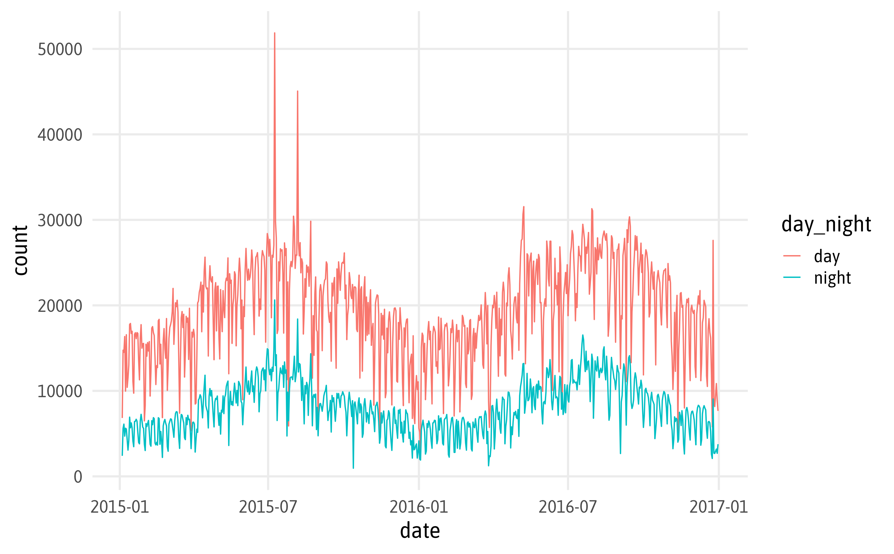
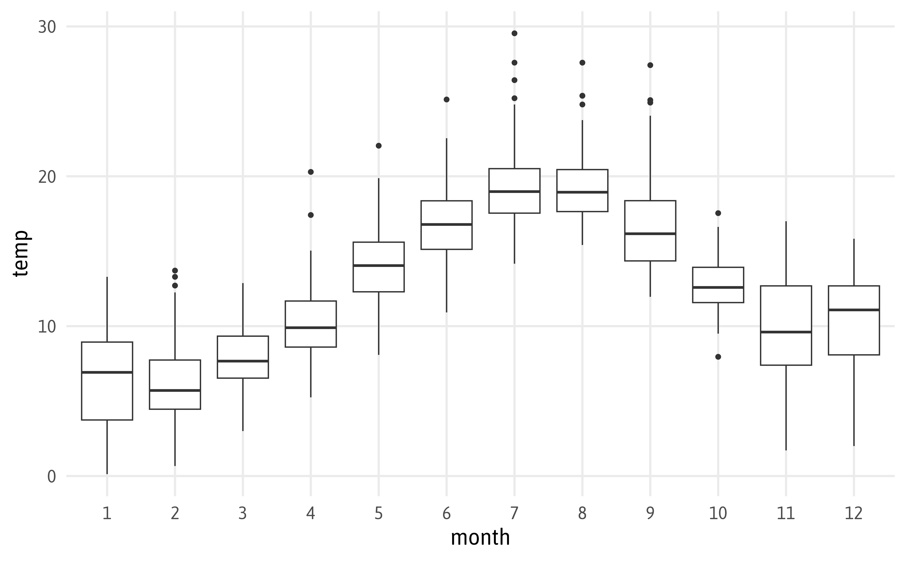
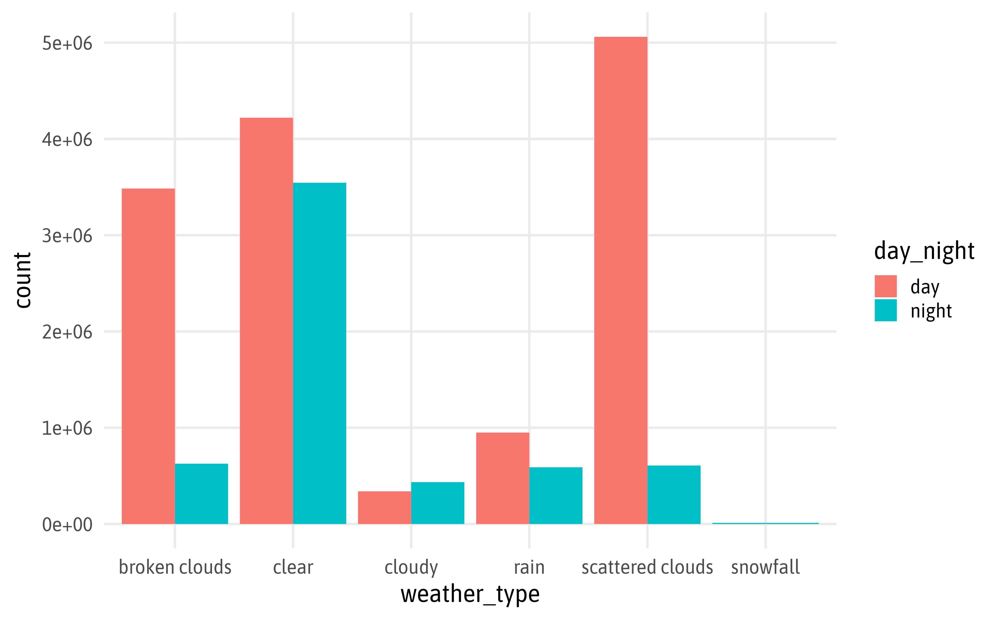
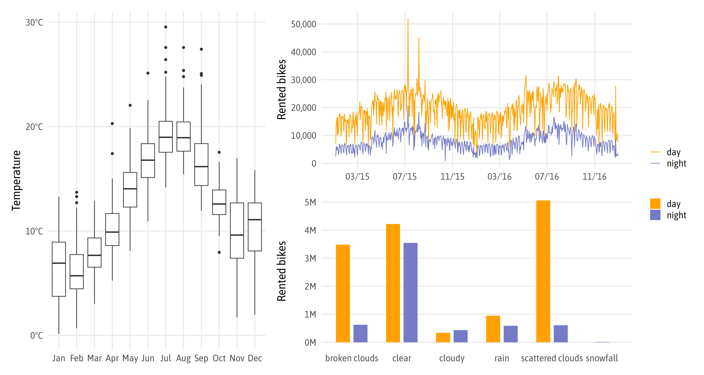
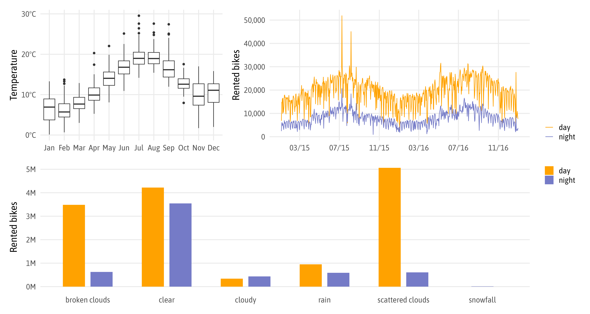
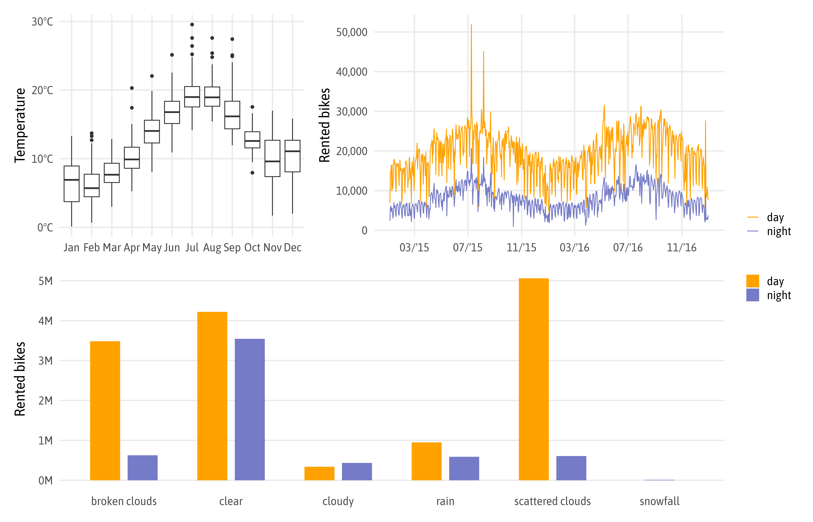

library(readr)
library(dplyr)
library(ggplot2)
## data
bikes <-
read_csv(
here::here("data", "london-bikes.csv"),
col_types = "Dcfffilllddddc"
)
## plot style
theme_set(theme_minimal(base_family = "Asap SemiCondensed", base_size = 18))
theme_update(
panel.grid.minor = element_blank()
)Engaging and Beautiful Data Visualizations with ggplot2
Fundamentals & Workflows
— Exercise Solutions —
Preparation
Exercise 1
Exercise 1
- Discuss / investigate with your neighbor:
- What are the differences between
geom_line()andgeom_path()? - Why can you use
geom_smooth()andstat_smooth()interchangeably? - What are the three ways to remove a legend from a ggplot?
- What are the differences between
geom_line() versus geom_path()
?geom_lineDescription
geom_path()connects the observations in the order in which they appear in the data.geom_line()connects them in order of the variable on the x axis.
geom_line() versus geom_path()
bikes_filtered <-
bikes |>
filter(year == 2015, month == 2, day_night == "day")geom_line() versus geom_path()

geom_smooth() and stat_smooth()
?geom_smoothDescription
geom_smooth()andstat_smooth()are effectively aliases: they both use the same arguments. Usestat_smooth()if you want to display the results with a non-standard geom.
layer(data, mapping, geom, stat, position)
layer()
ggplot() +
layer(
data = bikes,
mapping = aes(x = temp, y = count),
geom = "point",
stat = "identity",
position = "identity"
)
layer()
ggplot(
data = bikes,
mapping = aes(x = temp, y = count),
) +
layer(
geom = "point",
stat = "identity",
position = "identity"
)
geom_smooth() and stat_smooth()
geom_smooth() and stat_smooth()


“Non-Standard Geom”

“Non-Standard Geom”

“Non-Standard Geom”

geom_* versus stat_*

geom_* versus stat_*

Remove Legends

Remove Legends: Layer

Remove Legends: Aesthetic
Remove Legends: Aesthetic

Remove Legends: All

Exercise 2
Exercise 2
- Explore the TfL bike share data visually:
- Create a time series of counts per day and night.
- Draw box and whisker plots of average temperatures per month.
- Visualize bike counts per weather type and period as bar chart.
- Combine the three plots with patchwork.
- Export the final graphic in a format of your choice.
Time Series
ggplot(bikes, aes(x = date, y = count)) +
geom_line(aes(color = day_night))Time Series

Time Series
g1 <-
ggplot(bikes, aes(x = date, y = count)) +
geom_line(aes(color = day_night)) +
scale_x_date(date_breaks = "4 months", date_labels = "%m/'%y") +
scale_y_continuous(labels = scales::label_comma()) +
scale_color_manual(values = c(day = "#FFA200", night = "#757BC7")) +
labs(x = NULL, y = "Rented bikes", color = NULL)
g1Time Series

Box and Whisker Plots
ggplot(bikes, aes(x = month, y = temp)) +
geom_boxplot()Box and Whisker Plots

Box and Whisker Plots
ggplot(bikes, aes(x = forcats::fct_reorder(month, -temp), y = temp)) +
geom_boxplot()Box and Whisker Plots

Box and Whisker Plots
g2 <-
ggplot(bikes, aes(x = lubridate::month(date, label = TRUE), y = temp)) +
geom_boxplot() +
scale_y_continuous(labels = scales::label_number(suffix = "°C")) +
labs(x = NULL, y = "Temperature")
g2Box and Whisker Plots

Bar Chart
ggplot(bikes, aes(x = weather_type, y = count, fill = day_night)) +
geom_col()Bar Chart

Bar Chart
ggplot(bikes, aes(x = weather_type, y = count, fill = day_night)) +
stat_summary(geom = "col")Bar Chart

Bar Chart
ggplot(bikes, aes(x = weather_type, y = count, fill = day_night)) +
stat_summary(geom = "col", fun = "sum", position = "stack")Bar Chart

Bar Chart
bikes |>
group_by(weather_type, day_night) |>
summarize(count = sum(count)) |>
ggplot(aes(x = weather_type, y = count, fill = day_night)) +
geom_col()Bar Chart

Bar Chart
ggplot(bikes, aes(x = weather_type, y = count, fill = day_night)) +
stat_summary(geom = "col", fun = "sum", position = "dodge")Bar Chart

Bar Chart
ggplot(bikes, aes(x = weather_type, y = count, fill = day_night)) +
stat_summary(
geom = "col", fun = "sum",
width = .7,
position = position_dodge(
width = .8, preserve = "single"
)
)Bar Chart

Bar Chart
ggplot(bikes, aes(x = weather_type, y = count, fill = day_night)) +
stat_summary(
geom = "col", fun = "sum",
width = .7,
position = position_dodge2(
padding = .2, preserve = "single"
)
)Bar Chart

Bar Chart
g3 <- ggplot(bikes, aes(x = weather_type, y = count, fill = day_night)) +
stat_summary(
geom = "col", fun = "sum",
width = .7,
position = position_dodge2(
padding = .2, preserve = "single"
)
) +
scale_y_continuous(labels = scales::label_comma(scale = 1/10^6, suffix = "M")) +
scale_fill_manual(
values = c(day = "#FFA200", night = "#757bc7")
) +
labs(x = NULL, y = "Rented bikes", fill = NULL) +
theme(
panel.grid.major.x = element_blank()
)
g3Bar Chart

Combine Plots
library(patchwork)
g2 + (g1 / g3) + plot_layout(guides = "collect", widths = c(.7, 1))
Combine Plots
library(patchwork)
(g2 + g1) / g3 + plot_layout(guides = "collect")
Combine Plots
library(patchwork)
(g2 + g1 + plot_layout(widths = c(.7, 1))) / g3 + plot_layout(guides = "collect")
Save Multipanel Plot
ggsave("bikes-panel.png", width = 14, height = 9, dpi = 600, bg = "white")